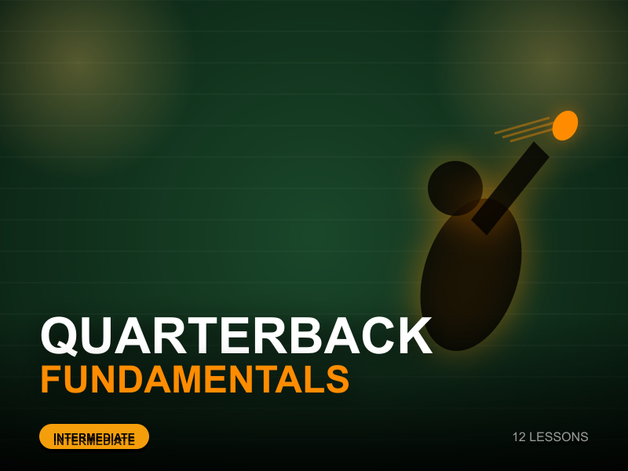
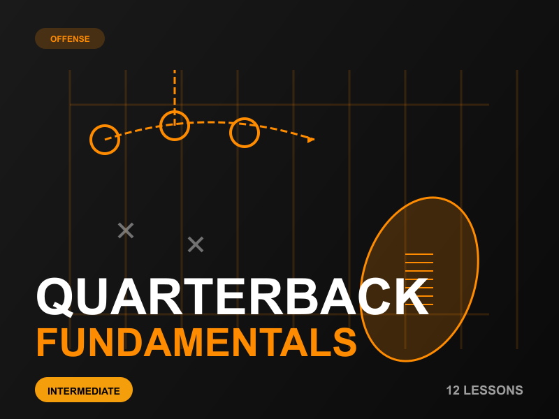
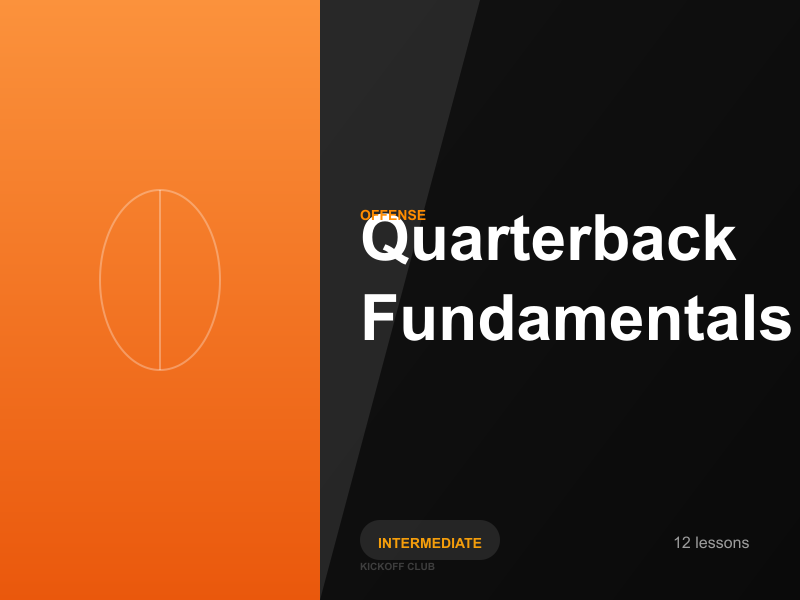

Photo-Realistic / Sports Photography
Dynamic sports photography aesthetic with dramatic lighting, player silhouettes,
motion effects, and stadium atmosphere. Creates an action-packed, professional
sports media feel similar to ESPN or NFL Network.

Pros
- High energy and excitement
- Professional sports media look
- Immediately recognizable as football
- Appeals to action-oriented users
- Creates emotional connection
Cons
- Can feel dated or generic
- May not stand out from other sports content
- Simulated photos lack authenticity
- Could intimidate beginners
- Harder to maintain consistency
Illustration / Graphic Design
Modern playbook-inspired design with X's and O's, route diagrams, and geometric
football elements. Clean vector-style graphics that emphasize strategy and learning.
Educational and approachable while maintaining visual interest.

Pros
- Unique and memorable
- Emphasizes learning/strategy
- Consistent across all courses
- Approachable for beginners
- Modern and fresh aesthetic
Cons
- Can feel too playful/casual
- May not convey professionalism
- Requires more design skill to execute
- Less immediate visual impact
- Harder to differentiate courses
Platform Style (Netflix / Udemy / Masterclass)
Ultra-clean, typography-focused design with bold color blocks and minimal elements.
Emphasizes premium quality and professionalism. Similar to high-end educational
platforms like Masterclass, Skillshare, and Netflix's documentary thumbnails.

Pros
- Extremely professional and premium
- Easy to read and scan quickly
- Timeless and won't feel dated
- Consistent brand look
- Emphasizes quality content
Cons
- May feel too minimal/boring
- Less visually exciting
- Doesn't convey football/sports theme
- Could blend with competitors
- Relies heavily on typography